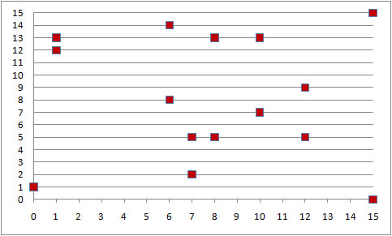

Understanding the Point on Curve Method
Typical fault detection methods such as parity prediction may be used in ECC but this simulator uses a fault detection scheme based on specific properties of elliptic fields. Elliptic fields must satisfy a non-singular equation. This simulator focuses on fields of order 2m which are commonly referred to as binary fields. The elements of these fields are binary strings of length m that satisfy the equation:
y2 + xy = x3 + ax2 + b
There are a finite number of points that satisfy the equation above for any chosen set of parameters. For example, let's choose the following:
a = 3
b = 1
m = 4
irreducible polynomial = x4 + x + 1
These parameters are insufficient for practical cryptography but the small values allow us to enumerate all the possible points and demonstrate how a fault in an elliptic curve arithmetic operation can be detected using the Point on Curve Method.
Solving the equation for all possible points (plus point at infinity) yields:
(12,5) |
(10,7) |
(7,2) |
(6,14) |
(1,12) |
(12,9) |
(8,5) |
(6,8) |
(1,13) |
(7,5) |
(15,15) |
(15,0) |
(10,13) |
(0,1) |
(8,13) |
To see why the Point on Curve Method is effective, look at the graph of valid points below. Out of a possible 256 points, only 15 are valid.

It is important to note that despite being able to detect most errors, this test can not guarantee detection of all single bit errors in our example. For instance, points (1, 12) and (1,13) can have an undetected error in the least significant bit of the Y-coordinate.
References:
N. KOBLITZ, “Elliptic curve cryptosystems”, Mathematics of Computation, 48 (1987), 203– 209.
N.Koblitz, Constructing elliptic curve cryptosystems in characteristic 2, Advances in Cryptology—CRYPTO ’90, Lecture Notes in Computer Science, Springer-Verlag, 537 (1991) pp. 156–167.
Dominguez-Oviedo, A., and Hasan, M. A., “Error-Detecting and Fault-tolerant Structures for ECC”, Technical Report CACR 2005-10, University of Waterloo, 2005